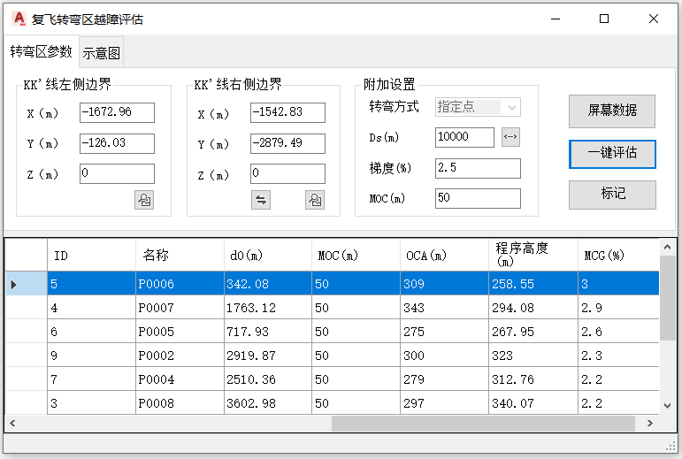

功能简介
【复飞转弯区评估】用于复飞转弯区的越障评估。以 KK′ 线（左 / 右侧边界）为基准，结合转弯方式与梯度参数构建转弯区并评估障碍物穿透。
界面预览

界面元素
| 分区 / 控件 | 说明 |
|---|---|
| KK′线左侧边界 / 右侧边界 | 分别输入两端点的 X / Y / Z（m）及经纬度、标高，定义 KK′ 线。 |
| 转弯区参数（选项卡） | 转弯方式（指定点等）、PDG（程序设计梯度）、Ds（SOC至转弯最早点的距离）、MOC、复飞梯度(%) 等参数。 |
| 附加设置 | 转弯方式与其它评估选项。 |
| 示意图（选项卡） | 展示转弯区评估示例。 |
| 一键评估 / 屏幕数据 | 评估障碍物、从图纸载入障碍物。 |
操作步骤
- 命令行输入
Y08_转弯区评估打开窗口。 - 填入 KK′ 线左侧 / 右侧边界坐标（可用【屏幕数据】拾取）。
- 在“转弯区参数”“附加设置”中设置转弯方式、梯度、MOC 等参数。
- 【屏幕数据】载入障碍物后点【一键评估】，查看结果并【标记】重要障碍物。
联动：在障碍物列表中单击某行，图纸会自动高亮并居中显示该障碍物。